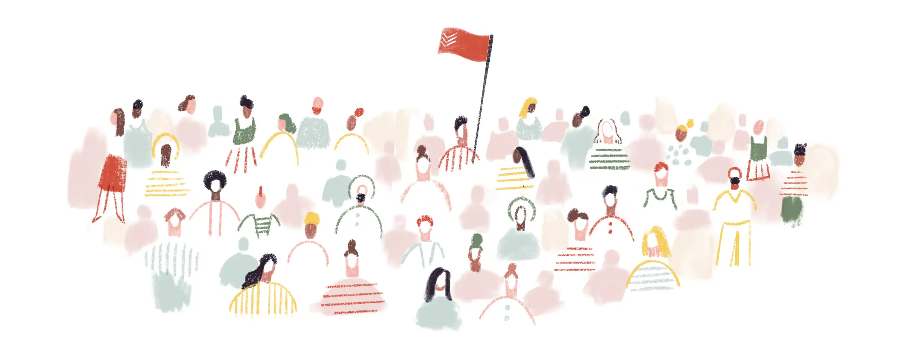

From overwhelmed to on top of it
Todoist gives you the confidence that everything’s organized and accounted for, so you can make progress on the things that are important to you.
Start each day feeling calm and in control
Get a clear overview of everything on your plate and never lose track of an important task.
lets you capture and organize tasks in seconds.
help you remember deadlines and build habits.
ensure that your projects stay neatly organized.
Focus your energy on the right things
Todoist surfaces the right tasks at the right times so you always know what to focus on next.
highlight the day’s most important tasks.
keep key projects, labels, or filters top of mind.
alert you about your most time-sensitive tasks.
Personalize your task views
Build your own task views to fit your unique style and workflow.
help you see the big picture with Kanban-style cards. Learn more about Boards
help you find the right group of tasks in seconds.
give you custom task views based on due dates, project, assignee, and more.
match your style, mood, and personality with 10+ colors.
Centralize all your work in one place
Simplify your workflow by connecting Todoist to your email, calendar, and files.
by forwarding emails into Todoist as tasks or comments.
(including voice notes) give rich context to your tasks.
display your scheduled tasks inside your calendar of choice.
See tangible progress
Small steps every day add up to big achievements over time. Set daily and weekly goals, and visualize your productivity trends.
by week and month help you stay on track to achieve your goals.
gives you a snapshot of account activity filtered by project or person.
paint a portrait of how small steps add up to big accomplishments.
awards you points for completing tasks and using advanced features.
Connect Todoist to your world
Link Todoist with the apps you already use and make it your central, organized hub for getting things done. See all integrations
Everywhere you are
With 10+ apps and plugins, you’ll be able to review your upcoming tasks – and jot down new ones – no matter where you happen to be. Everything stays in perfect sync across all your devices.
Millions of people rely on Todoist
for sanity and structure at work and at home
Tweets
Follow @Todoist on TwitterI should buy a lifetime subscription to @Todoist. It seriously runs my life. Work projects, groceries, birthday gift reminders. It’s essentially my personal assistant most of the time.
@hailleymariTodoist made my life drastically better, it helped me declutter my brain to focus on the important things. Because of Todoist, I was able to read 15 books in 2 months, learn iOS development and spend more time with my family
@eihab_khanBy using Todoist every day I’ve become more productive than anytime in my life. I can’t express how much I love your software. It’s the first thing I look at in the AM and the last thing I do before bed, organize next days tasks. Truly love it!
@douglasabrownApp Store
5 stars, 60K ratingsI have a side business. And I am always telling people that I will do something and then forget. Now, I make a promise and record it in my Todoist so I can’t forget. My business is better because of it!
Todoist has provided just the tool I need for managing work that can so easily fall through the cracks. I recommend it to managers of small businesses – it can keep you from missing deadlines and due dates.
This app has been a fantastic tool in helping me stay organized and on track. Pro was a great decision and I am excited to have my work and personal life on track!
Play Store
Editor’s ChoiceTodoist has reduced my stress levels enormously. I’m doing a PhD and juggling several really challenging and unpredictable roles - Todoist is helping me stay on top of a really complex range of tasks.
Todoist is the most important app I use. It’s a tremendous way to keep track of professional and personal projects and tasks, make lists, collaborate at work, and keep track of my kids’ responsibilities.
This app helped me become more productive. I find it really helpful how Todoist does reviews of all the completed tasks, as it gives me an insight into my productivity pattern. Highly recommend!